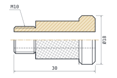
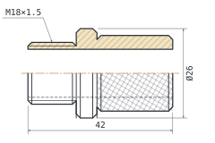
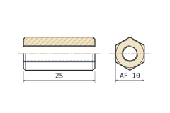
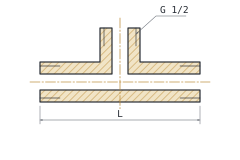

Brass turned components
CNC and cam-automat turned parts made from brass bar to your drawing: bushes, pins, spacers, nozzles, inserts and connector bodies. CNC for complex parts and short runs; cam automats and special-purpose machines for long runs.

- Diameter
- Ø5 – 100 mm
- Length
- ≤ 100 mm
- Tolerance
- ±0.05 mm, run-out 0.05
- Material
- CW614N, CW617N; lead-free and DZR on request
- Threads
- M · BSP/BSPT · NPT · UNC/UNF · PG
- Finish
- Natural, or plated in our plant: nickel, tin or zinc
- Gen. tolerance
- ISO 2768-m unless drawn · threads gauged GO / NO-GO
Typical turned parts
Representative shapes, drawn as half-sections or exterior views (not to a common scale). Photos of real parts follow after the photo shoot, shown only with customer permission.






Illustrative parts. Replace with approved customer parts or photos from the shoot (shot list A1).
Which machine makes your part
We choose the process that gives the lowest cost at your volume, and explain the choice in the quote.
| Process | Best for | Range | Runs | Notes |
|---|---|---|---|---|
| CNC turning | Complex profiles, several features in one set-up, frequent changeovers | Ø5–100 mm | Samples to medium volume | Live tooling for cross-holes and flats TBC |
| Cam automats | Simple to medium parts in long runs | TBC | High volume | Lowest piece price once tooled |
| Special-purpose machines | Single operations on large batches: drilling, threading, slotting | — | High volume | Built in-house TBC |
| Forging, then machining | Bodies with side branches or large flanges | 25 g – 1 kg | Medium to high | Uses less material than bar |
With each quote we suggest where cost can come out, and you decide: design for cost.
Brass grades we machine
Rod is bought from approved mills with a test certificate for every heat, and checked on arrival.
| EN grade | Designation | Character | Typical use | Supply |
|---|---|---|---|---|
| CW614N | CuZn39Pb3 | Free-cutting, best machinability | Turned parts, cable glands, inserts | Standard |
| CW617N | CuZn40Pb2 | Hot-forging brass | Forged bodies, fittings | Standard |
| CW602N | CuZn36Pb2As | Dezincification-resistant (DZR) | Drinking-water fittings | On request |
| CW511L | CuZn38As | Low-lead, DZR | Drinking-water, lead-free markets | On request |
| CW724R | CuZn21Si3P | Lead-free, high strength | Lead-free turned parts | On request |
Indian, British and US equivalents: brass grade equivalents.
Buying turned brass parts from AirGrip
What do you need for a quote?
Which documents come with a batch?
Samples, lead times, NDA and delivery terms: Ordering & shipping.
Other ways we make brass parts



Have a turned part to quote?
Send the drawing with quantities. You get price, lead time and any cost-saving suggestions in the quote.